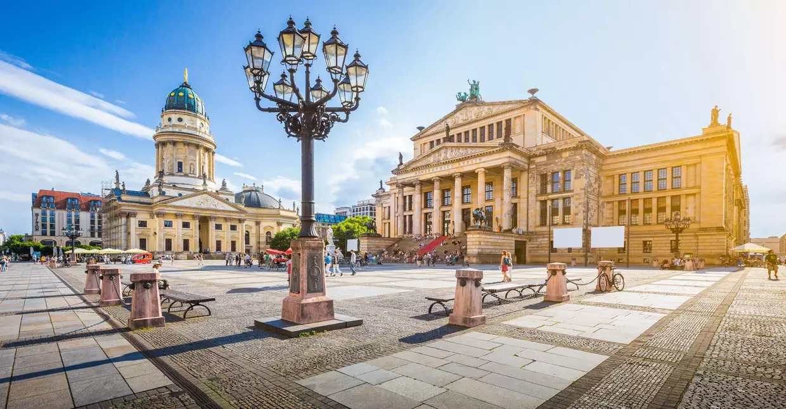

Destinos
LONDRES, PARIS E COMBINADOS
Dos famosos pubs de Londres, até a mundialmente conhecida Torrei Eiffel, nossos roteiros para Londres Paris e Combinados vão te mostrar uma infinidade de opções para se apaixonar ainda mais pela Europa.
Confira todas opções de roteiros de nossas excursões, solicite uma cotação e torne sua viagem realidade.
PORTUGAL E ESPANHA
Portugal tem se tornado um dos destinos preferidos dos turistas brasileiros. Só para se ter uma ideia, o número de brasileiros que visitaram o país cresceu 39% em 2017. Gran Via é a avenida mais famosa de Madri na Espanha. Lá, você encontrará animação a qualquer hora do dia.
Conheça estas e outras cidades em nossos roteiros de Portugal e Espanha.
EUROPA ECONÔMICA
Conheça as capitais mais clássicas da Europa, em roteiros incríveis de viagens com as melhores condições e preços do turismo. Você encontrará seu tour econômico europeu, e se surpreenderá com nossos roteiros acompanhados de guias turísticos.
Pacotes
BELAS CIDADES DA EUROPA
Serviços Incluídos:
- Circuito em ônibus de turismo;
- Guia acompanhante profissional;
- Traslados de chegada e saída;
- 20 Noites em regime de hospedagem com café da manhã buffet;
- Visitas panorâmicas com guia local em: Londres, Paris, Berlim, Praga, Viena, Budapeste, Florença e Roma;
- Travessia do Canal da Mancha Calais / Dover em ferry e Folkestone/ Calais por Eurotúnel ou vice-versa;
- Passeio noturno por Paris Iluminada;
- Cruzeiro no Reno de 1 hora aproximadamente entre Boppard e St Goar;
- Passeio de barco pela Lagoa de Veneza;
- Passeio por o Bairro Trastevere em Roma e centro histórico em Viena;
- Sacola de viagem entregue na chegada à Europa;
- Taxas hoteleiras obrigatórias.
Itinerário:
01º DIA (DOMINGO): BRASIL /LONDRES
Saída em voo previsto com destino a Londres. Noite e refeições a bordo.
02º DIA (SEGUNDA): LONDRES
Chegada ao aeroporto de Londres, assistência e traslado ao hotel (Quarto disponível após as 14h00). Hospedagem. Ás 19h30 na recepção do hotel terá lugar uma reunião com o guia para apresentação dos participantes. Visita opcional de Londres Histórico com pub.
03º DIA (TERÇA): LONDRES
Café da manhã. De manhã visita panorâmica da cidade, breve parada para admirar o Parlamento, o Big Ben e a Abadia de Westminster. Continuação do tour por Trafalgar Square, Picadilly Circus, Regent Street, e Palácio de Buckingham (possibilidade de observar o render da guarda). Tarde livre para desfrutar da cidade. Opcionalmente poderá visitar o Castelo de Windsor, residência preferida de sua majestade, a Rainha Isabel II. Hospedagem.
04º DIA (QUARTA): LONDRES
Café da manhã. Dia livre no qual sugerimos que visite opcionalmente alguns dos pontos turísticos, como: Convent Garden, não esquecendo a National Gallery, o Museu Britânico e o Museu Madame Tussauds ou poderá subir ao London Eye e contemplar uma fantástica vista sobre a cidade. Hospedagem.
05º DIA (QUINTA): LONDRES / CANAL DA MANCHA / PARIS
Café da manhã. Saída em direção a Folkestone para a travessia do Canal da Mancha no trem “Le Shuttle” pelo Eurotúnel (o segundo maior túnel submarino do mundo). Chegada a Calais e continuação da viagem por estrada até Paris. Hospedagem. Paris é uma das cidades mais belas do mundo e uma das mais visitadas, uma cidade mágica com encanto especial. À noite realizaremos uma visita incluída de Paris iluminada.
06º DIA (SEXTA): PARIS
Café da manhã. Visita panorâmica da cidade passando por: Campos Elíseos, Praça da Concórdia, Arco do Triunfo, Opera, Bairro Latino, Sorbonne, Panteão, Inválidos, Escola Militar, Campo de Marte etc. Tarde livre.
07º DIA (SÁBADO): PARIS
Café da manhã. Dia livre para desfrutar da cidade luz e realizar algum tour opcional. Sugerimos o Louvre ou o Notre Dame. Hospedagem.
08º DIA (DOMINGO): PARIS / BOPPARD /CRUZEIRO NO RENO / ST. GOAR / FRANKFURT
Café da manhã. Saída em direção a Boppard, cidade alemã junto ao rio Reno, o maior rio da Europa Ocidental. Embarque num cruzeiro onde poderemos admirar o rochedo Loreley e diversos castelos e vinhas nas encostas do rio Reno. Desembarque em St. Goar e continuação da viagem por terra até Frankfurt para visitar a Praça Rommer. Hospedagem.
09º DIA (SEGUNDA): FRANKFURT / ERFURT / BERLIM
Café da manhã e saída até Erfurt onde efetuaremos o tour orientativo desta cidade medieval, duas principais vias do Império que ligava a região do Reno com a Rússia, onde o jovem Lutero estudou filosofia. Continuação até Berlim. Hospedagem.
BELEZAS DE PORTUGAL COM SANTIAGO

Serviços Incluídos:
- Circuito em ônibus de turismo;
- Guia acompanhante profissional;
- Hospedagem nos hotéis previstos ou similares com café da manhã;
- Excursão Lisboa, Estoril, Cascais e Sintra com guia local (dia 6);
- Visitas guiadas em: Évora, Porto e Santiago de Compostela;
- Visita Museu Municipal de Beja (dia 3);
- Visita à Fortaleza de Sagres (dia 4);
- Visita à Universidade de Coimbra (dia 7);
- Visita ao Paço Ducal em Guimarães (dia 9);
- Visita a Caves de Vinho do Porto (dia 9);
- Visita ao Palácio da Bolsa no Porto (dia 10);
- Cruzeiro das Pontes no rio Douro (dia 10);
- Traslados de chegada e saída;
- Taxas hoteleiras incluídas;
- Gorjetas a carregadores de malas nos hotéis (1 mala por pessoa);
- Sacola de viagem entregue na Europa.
Itinerário:
01º dia (Quinta): Brasil / Lisboa
Saída em voo com destino a Lisboa. Noite e refeição a bordo.
02º dia (Sexta): Chegada a Lisboa
Chegada ao aeroporto de Lisboa. Recepção e traslado privativo para o hotel. Hospedagem. Às 19h30 na recepção do hotel terá lugar reunião com o guia para apresentação dos participantes.
03º dia (Sábado): Lisboa / Évora / Albufeira
Café da manhã. Saída para Évora. Visita a pé da histórica cidade Patrimônio Mundial, passando junto ao Templo de Diana, Sé, Praça do Giraldo, Igreja de São Francisco e possibilidade de visita à célebre Capela dos Ossos (opcional). Continuação atravessando o Alentejo por Beja, capital do Baixo Alentejo. Visita ao Museu Municipal. Continuação da viagem com destino ao Algarve. Hospedagem em Albufeira.
04º dia (Domingo): Albufeira / Lagos / Albufeira
Café da manhã. Saída para a região do Barlavento Algarvio para Sagres. Visita ao Cabo de São Vicente e Fortaleza, promontório natural do Sudoeste de Portugal continental. Visita à Ponta de Piedade, catedral das falésias algarvias próximo de Lagos. Paragem nesta cidade para sempre ligada à história marítima nacional. Tempo livre. Continuação pela cidade portuária de Portimão e regresso à turística cidade de Albufeira. Aproveite para percorrer a praia e a zona comercial envolvente. Hospedagem.
05º dia (Segunda): Albufeira / Vilamoura / Lisboa
Café da manhã. Saída para a região do Sotavento Algarvio. Chegada a Tavira. Tempo para visita à típica cidade do rio Gilão. Continuação para Faro, capital da província algarvia, onde se realça o núcleo histórico amuralhado, com acesso pelos Arcos da Vila, do Repouso e Porta Nova até à Catedral. Continuação para Vilamoura. Panorâmica e paragem junto à marina para efetuar passeio pedonal ao seu redor. Almoço livre. Continuação para Lisboa. À noite sugerimos opcionalmente jantar típico com fados. Hospedagem.
06º dia (Terça): Lisboa / Sintra / Lisboa
Café da manhã. Saída para Sintra. Tempo para usufruir desta tradicional vila Patrimônio da Humanidade. Na continuação, panorâmica da Costa do Sol por Cascais e Estoril, regressando pela Riviera portuguesa a Lisboa. Visita Panorâmica da capital de Portugal, conhecendo o exterior dos principais pontos turísticos da cidade como a Torre de Belém, Mosteiro dos Jerônimos com tempo para degustar os famosos pastéis de Belém (opcional) e ainda Praça do Comércio, Bairro de Alfama com a Catedral e a Praça do Rossio. Hospedagem.
07º dia (Quarta): Lisboa / Coimbra / Braga
Café da manhã. Saída para visita a Óbidos, encantadora vila medieval amuralhada. Continuação para a típica vila piscatória da Nazaré, com destaque no “Sítio” para a Igreja, Ermida e miradouro deslumbrante. Saída para a histórica e monumental cidade de Coimbra, repleta de tradições e recantos de rara beleza. Panorâmica da cidade observando o rio Mondego, os conventos de Santa Clara, Sé velha e igreja de Santa Cruz, entre muitos outros pontos turísticos. Visita à antiga e prestigiada universidade, que formou muitos ilustres em várias áreas da sociedade. Tempo no centro da cidade. Continuação para a cidade dos arcebispos e capital do Minho: Braga. Hospedagem.
08º dia (Quinta): Braga / Santiago de Compostela / Braga
Café da manhã. Saída com destino a Santiago de Compostela. Visita com guia local ao centro histórico, turístico e religioso, com destaque para a Catedral, onde acorrem diariamente inúmeros peregrinos vindos dos famosos “Caminhos de Santiago”. Este grandioso monumento ergue-se na Praça da Obradoiro, lugar de encontro de todos os que aqui chegam. Regresso a Portugal pela típica vila de Ponte de Lima com tempo para compras no comércio tradicional. Apreciando a paisagem minhota, chegada a Braga. Hospedagem.
09º dia (Sexta): Braga / Guimarães / Porto
Café da manhã. Panorâmica da cidade com destaque para o exterior da Catedral, mais antiga de Portugal e visita ao Santuários do Bom Jesus. Continuação para Guimarães, cidade berço da nacionalidade portuguesa. Visita ao interior no Paço dos Duques de Bragança seguida de visita a pé no centro histórico da cidade, onde poderá admirar as suas velhas muralhas, ruas estreitas, casas palacianas, foto do exterior do Castelo e a estátua do Fundador D. Afonso Henriques. Tempo para compras. Partida para o Porto, visitando ainda prestigiadas caves com degustação do famoso Vinho do Porto. Chegada ao hotel. Hospedagem.
10º dia (Sábado): Porto
Café da manhã. Dia dedicado à segunda maior cidade de Portugal. Panorâmica com um olhar sobre a Sé, Praça da Liberdade onde se situa a estátua de D. Pedro IV de Portugal (D. Pedro I no Brasil), igreja e torredos Clérigos e Foz com o forte apelidado de “Castelo do Queijo”. Visita ao Palácio da Bolsa, destacando o seu magnífico Salão Árabe e cruzeiro em barco de turismo pelo rio Douro, admirando os bairros típicos e núcleo histórico que foi declarado Patrimônio da Humanidade pela Unesco. Tarde livre na cidade para visitas ou compras ao gosto pessoal. Hospedagem.
11º dia (Domingo): Porto / Aveiro / Fátima / Lisboa
Café da manhã. Saída para Aveiro, a fantástica cidade dos canais e dos deliciosos “ovos-moles”, apreciado doce regional. Continuação para Fátima, local das aparições em 1917 de Nossa Senhora aos Três Pastorinhos, hoje local de peregrinação mundial. Visita ao Santuário à Capelinha das Aparições e à Basílica, onde se encontram os túmulos de Lúcia, Francisco e Jacinta. Tempo para compromissos religiosos e compras. Regresso a Lisboa. Hospedagem.
12º dia (Segunda): Lisboa / Cidade de origem
Café da manhã e traslado privativo para o aeroporto. (Quarto disponível até às 12h00).